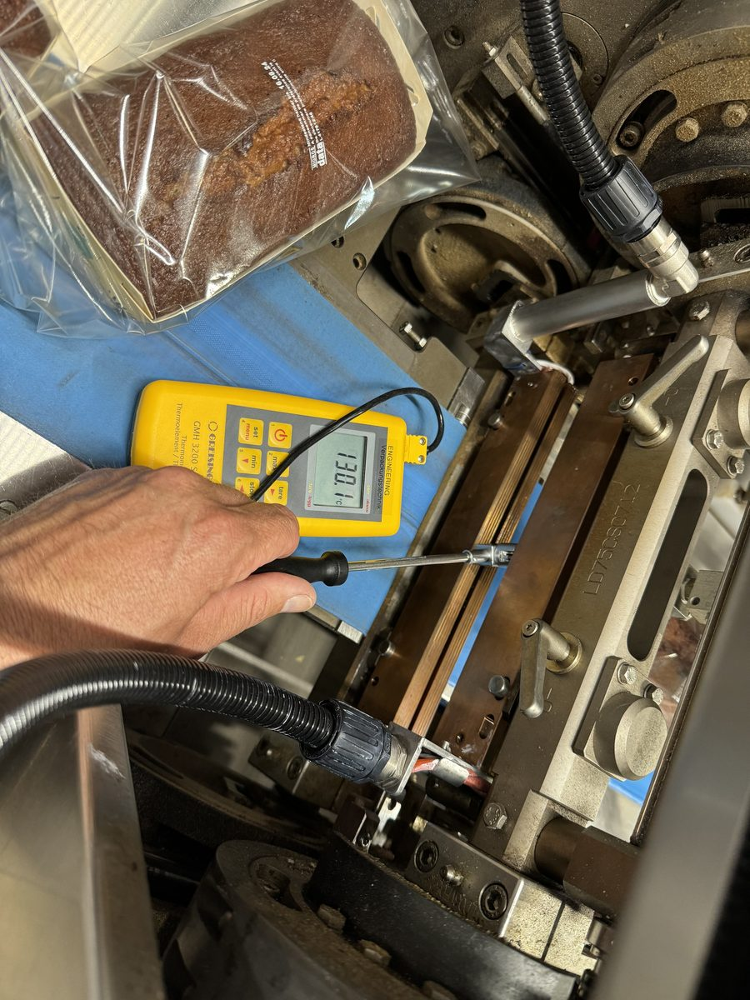
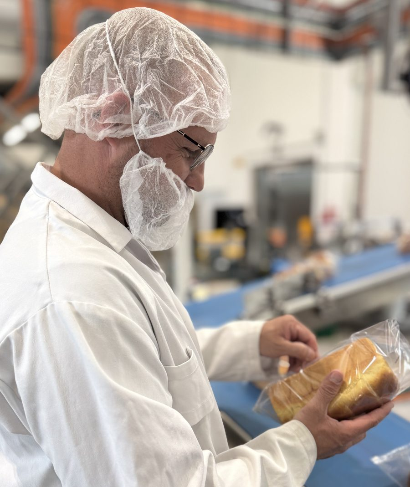
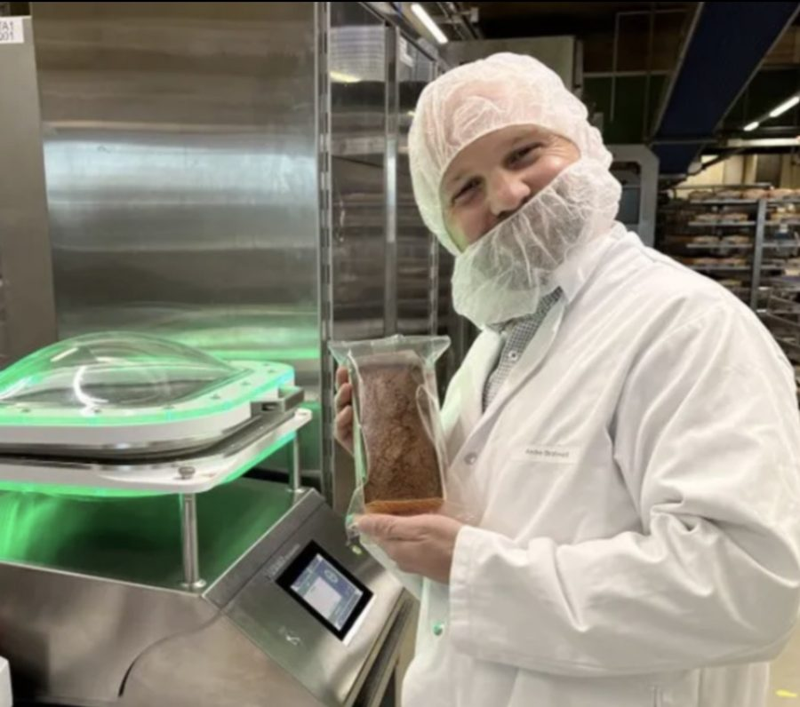

Neue Verpackungsmaterialien. Linie instabil. SAP passt nicht zur Realität.
Ich bringe das zusammen.

André Strohwald
Verpackungsentwicklung • SAP S/4HANA • Materialintegration
Kostenlosen Strategiecheck buchen
30 Minuten für Material, Linie und SAP.
Über mich
An der Produktionslinie wie am Tisch – verlässlich
Über 12 Jahre Erfahrung an der Schnittstelle zwischen Entwicklung, Einkauf und Produktion.
Lebenslauf
Fundament
- M. Eng. Verpackungstechnik
- B. Sc. Lebensmitteltechnologie
- Ausbildung Bäcker
- Führung und Projektverantwortung
- Projektmanagement
Berufliche Stationen
Expertise & Fokus
- Mitarbeit an Integration SAP S/4 HANA
- Erfolgreiche Optimierung von Verpackungssystemen
- Über 12 Jahre in der Verpackungsentwicklung in Deutschland (DMK) und der Schweiz (MIGROS/FFB-Group)
- End-to-End Projektbegleitung
- Schnittstelle: Entwicklung – Einkauf – Produktion
Meine Erfolge
Messbare Ergebnisse statt Absichtserklärungen
250 t
Karton pro Jahr eingespart
100+ t
CO₂-Emissionen pro Jahr reduziert
90 %
Umstellung auf rPET
7-stellig
Optimierungsprojekte umgesetzt
- Inbetriebnahme neuer Verpackungslinien
- Systemwechsel SAP S/4 HANA begleitet
- Umstellung auf Mono aPET Folien
- Gründung Arbeitsgruppe recyclingfähiger Folien
Vorgehen
Ihr Weg zum Erfolg – in vier Schritten
01
Analyse
- Vollständige Bestandsaufnahme
- Verpackungsmaterialien
- Maschinenparameter
- SAP-Stammdaten
- Linienperformance
02
Potenziale
- Identifikation Einspar- und Optimierungspotenzial
- Materialkosten
- Rezyklatanteil
- PPWR-Konformität
- Umsetzbarkeit

03
Umsetzung
- Inbetriebnahme und Prozessintegration neuer Packstoffe
- Rollierende Materialumstellung
- Aktuelle SAP-Stammdatenpflege
- Von der Ausschreibung zur Abnahme
04
Ziel
- Stabile Linie und Prozesse
- Korrekte SAP-Daten
- PPWR-Konform
- Dokumentierte Ergebnisse
- Reduzierter Materialeinsatz
- Messbar und nachvollziehbar
- Zukunftsfähig


Der erste Schritt zu Ihrem Erfolg.
30 Minuten für Material, Linie und SAP.
Kostenlosen Strategiecheck buchen„Verpackung muss nicht nur nachhaltig sein – sie muss funktionieren.“André Strohwald | Linienwerk – Strohwald Engineering
Kontakt
Sprechen wir über Ihre Linie.
André Strohwald
Linienwerk – Strohwald Engineering
[Straße Hausnummer einfügen]
[PLZ Ort einfügen]
E-Mail & Telefon
[E-Mail-Adresse einfügen]
[Telefonnummer einfügen]